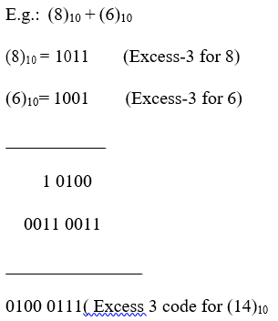
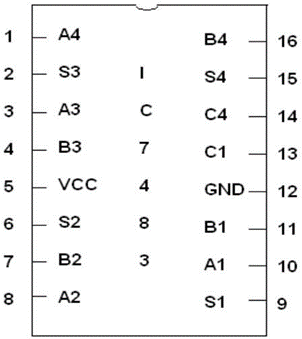
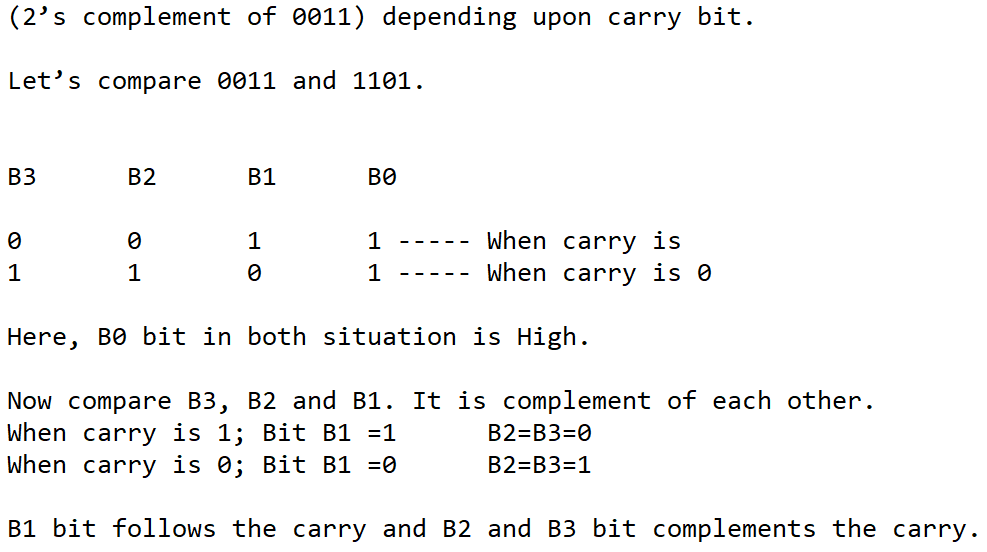
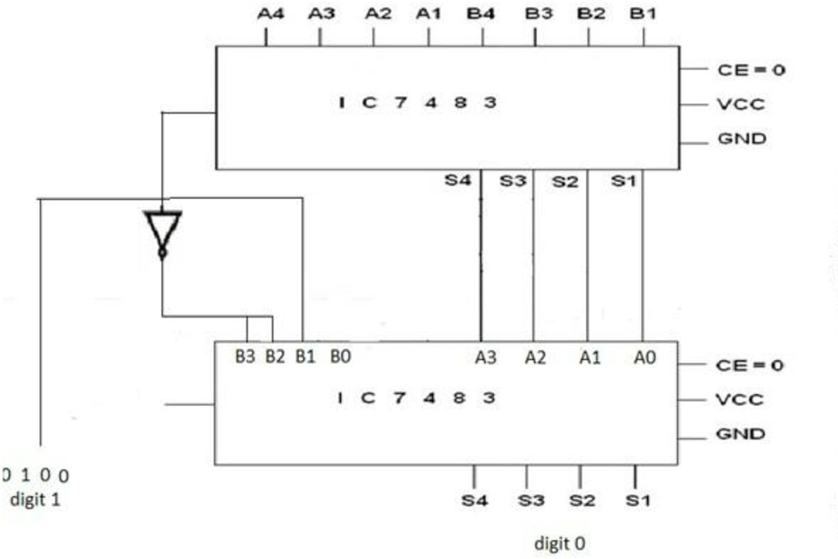

Design and implement Single digit EXCESS-3 adder using IC 7483.
Excess-3 code is a non-weighted code. It is a modified form of a BCD code. The Excess-3 code can be derived from the natural BCD code by adding 3 to each coded number. It is also known as Self Complementary code.
Excess-3 code is a self-complementary code because 1’s complement of Excess-3 number is Excess-3 code for the 9’s complement of corresponding number.
Example: Excess-3 code for (4)10 is (0111) 1’s complement of this number is 1000 Which is Excess-3 code for (5)10 and 5 XiSs-3 9’s complement of (4)10.
Rules for Excess-3 addition:
1. Add two Excess-3 numbers
2. If carry is 1; add 3 to sum
3. If carry is 0; subtract 3 from sum
Example

Pin Diagram for IC 7483:

1] 4 bit Binary addition of excess 3 codes of two operands can be implemented with IC 7483
2] We have to design the circuit which will either add 0011 or subtract 0011 i.e. add 1101
Pin Diagram for IC 7483:

Follow the below steps
1. Connections were given as per circuit diagram.2. Logical inputs were given as per truth table.
3. Observe the logical output and verify with the truth tables.
Here you can embed an interactive simulation tool or provide links to simulation resources.
Q.1] Explain the significance of Excess 3 Code?
Excess-3 (XS-3) code is a binary-coded decimal (BCD) code that adds 3 to each decimal digit before converting it to its 4-bit binary equivalent. This non-weighted, self-complementary code simplifies certain arithmetic operations, such as addition and subtraction, due to its inherent properties. It also aids in error detection by introducing redundancy, which helps identify and correct single-bit errors. Commonly used in digital systems like clocks and calculators, Excess-3 code facilitates efficient and error-minimized decimal number manipulation.
Q.2] Write the applications of BCD & Excess 3 code?
BCD (Binary-Coded Decimal) and Excess-3 code have distinct applications in digital systems. BCD is widely used in digital displays like clocks and calculators, as it facilitates easy conversion between human-readable decimal numbers and binary. It is also employed in financial calculations and commercial applications where precision is crucial, avoiding errors from binary floating-point representation. Additionally, BCD is useful in microcontrollers and embedded systems for straightforward programming and in digital measuring instruments for accurate data representation. On the other hand, Excess-3 code is utilized in error detection due to its redundancy and self-complementary properties, simplifying arithmetic operations such as subtraction. It is also used in data transmission for enhanced error checking and in some legacy systems for historical compatibility and simplified digital circuit design.
- Reference 1: “Digital Fundamentals” by Floyd & Jain
- Reference 2: R. P. Jain, “Modern Digital Electronics”, 3rd Edition, Tata McGraw-Hill
- Reference 3: 3. Malvino, D.Leach“Digital Principles and Applications”, 5th edition, Tata McGraw- Hill